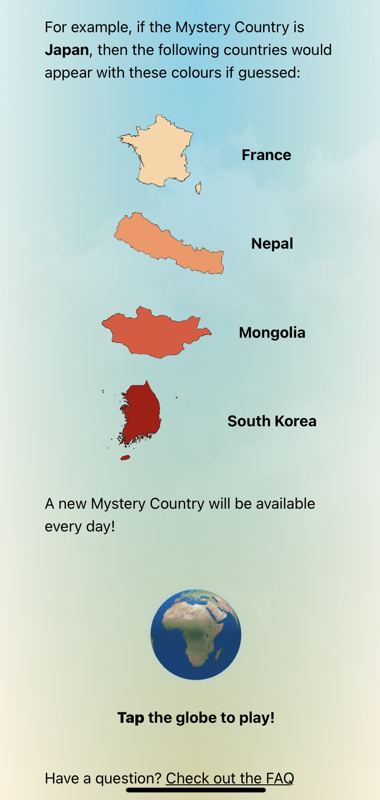
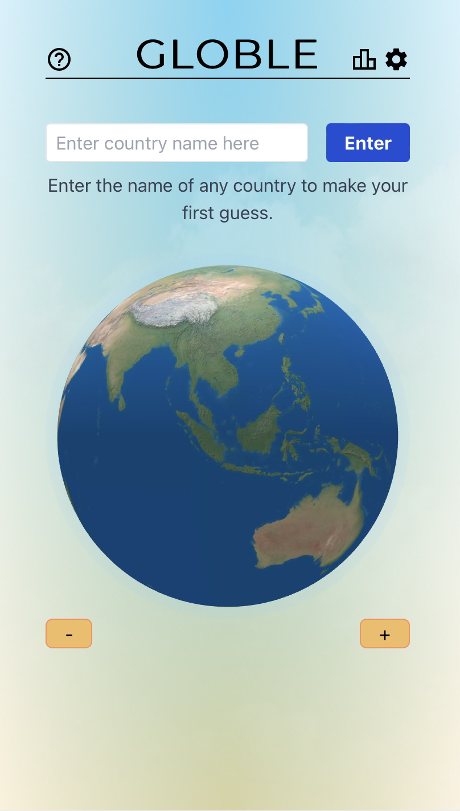
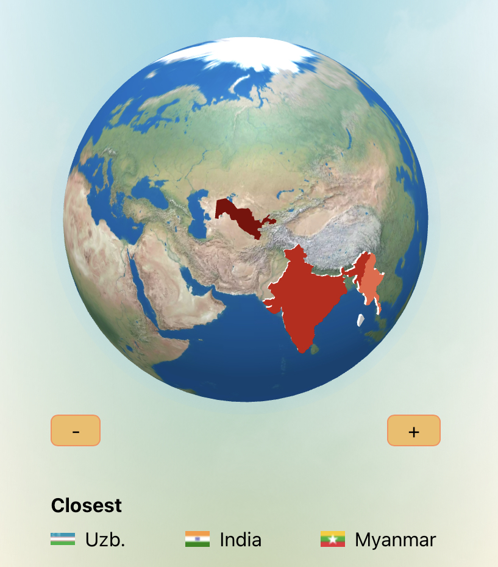
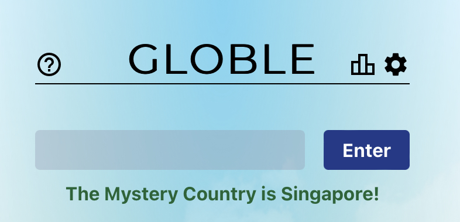
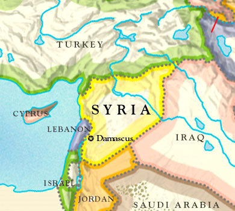

Globle is a great game. Its name is a play on the popular word game Wordle but it's quite different.
It will test how well you know geography and arriving at the correct answer each day can be a long process.
To start playing, first go to the Globle site. From there you'll be at the home screen and you will see something like this: 
As the screen says, just tap the globe to play. From there, you will start entering country names until you land on the right one. Here's how the screen looks: 
As you select countries, the country you select will be shaded according to how close your guess is. The darker the shade of red, the closer you are to the answer: 
Once you select the correct country, here is what you see at the top of the screen (note: this game was played on a different day than the image above):  While the concept of the game is simple, the process of finding the correct answer can be difficult.
While geography buffs will always do well, it also helps to consider the math. Globle has 196 countries (note that Globle includes Taiwan as a possible answer). That gives you about a .05% chance of guessing it right on the first try. Those aren't good odds.
It helps to think in terms of probability in order to help you more quickly get the right answer. Here is the breakdown of the number of countries in the world by region:
With a slightly better than 1 in 4 chance that the answer is in Africa, that is a good continent to draw your first guess from. Asia, with a 1 in 4 chance of having the solution, is also a good choice. Both have a lot of countries, so if the answer you put in shows the answer is still > 5000 km away, it's likely that the solution is in another region. How far away the solution is will guide you in your next selection.
Here is how I solved Globle on June 16, 2022:
I started in North Africa and my 2nd guess of Eritrea was even closer to the solution. Then my 3rd and 4th guesses in sub-Saharan Africa were further from the solution. At that point I figured it was time to move to a different region. Given the first guess, Tunisia, was 2140 km from the solution, I guessed the solution was likely in the Middle East (Asia). Here's how I continued:
Getting the correct answer in 6 guesses isn't bad, but it was not automatic either.
Take a look at the map of Syria below:
I had 5 countries to choose from: Lebanon, Israel, Jordan, Iraq, and Turkey. There was a 1 in 5 chance of getting it right (20%) and I made the right choice. It also could have gone the other way, having to make four more guesses until I found the answer.
Once you narrow it down to a country nearby is when your knowledge of geography comes into play. Africa, for example, has 54 countries so finding the answer is still difficult without solid geographical knowledge of the continent. Also, if the solution is one of the Pacific or Caribbean islands it might take a lot of turns to find the right answer if you're not familiar with those regions. That's what makes the game so challenging.
I hope this quick guide is helpful. Globle is a difficult, but fun, game to play. Keep at it and your geography skills will improve. Have fun!
Your local time is below.
Don't run out of ⏳ to play today's Globle!